Rectora
Palabras de la rectora
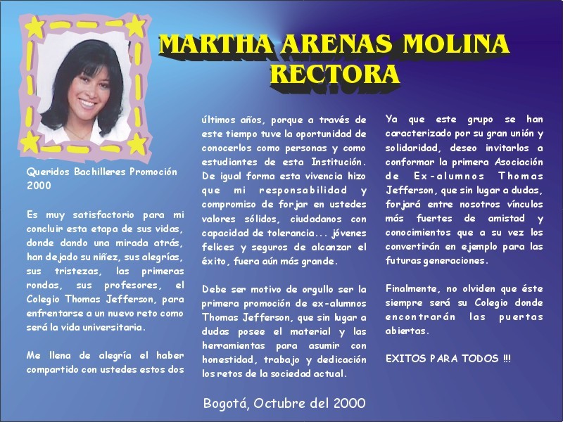
Las primeras secciones activas recuperan las palabras de despedida, el personal administrativo, servicios generales, profesores, pre-escolar, primaria, bachillerato y la galería de Prom 2000.
Palabras de despedida
Mensajes recuperados del archivo original: Rectora, Gonzalo Serna y Undécimo.
Rectora

Gonzalo Serna

Undécimo
No sé por donde empezar, tal vez con lo mismo de siempre, o más bien deseándole suerte a esta promoción 2000 y a todas aquellas que vienen. Lo único cierto es que con la finalización de este gran escalón, que hace parte de una inmensa escalera la cuál es nuestra vida, se dejan atrás muchas cosas que al parecer son muy pequeñas, pero para seguir adelante toca mejorarlas y en lo posible toca dejarlas atrás.
Pequeñas cosas, como aquellas copias en las que creíamos ingenuamente engañar a un profesor, pero en verdad ahora sabemos con toda seguridad, que de aquí en adelante, cualquier engaño, va a ser un engaño, pero para un futuro y para nuestra propia vida.
Ahora y como siempre solo me resta decir “adiós”, sí un adiós entre comillas, porque es solo un adiós al colegio: sus aulas, sus pupitres, sus corredores y sus canchas, pero este adiós no debe ser un adiós definitivo entre nuestras vidas.
No miremos la universidad como un punto de separación, sino que al contrario veámosla como un punto de apoyo, en la cuál la unión es la constante para seguirnos apoyando unos a otros. Sí aunque es la hora de decir “adiós” también es la hora de decir gracias.
Gracias a todas aquellas personas que nos apoyaron incondicionalmente, a nuestras familias, a la vida misma, pero en especial a los profesores, porque sin la ayuda de ellos no hubiéramos tenido el conocimiento suficiente para poder culminar esta etapa.
Pero muy por encima de habernos dado un conocimiento, gracias por habernos dado una filosofía de vida, que de una u otra forma nos ha preparado para tener una visión de lo que puede ser una elección en nuestro futuro.
“Adiós” y suerte, y no nos olvidemos de nuestro apoyo común que es para un futuro que el mundo necesita.
Adolfo Ballesteros F. Prom 2000
Personal administrativo
Galería recuperada del archivo original con directivas, coordinación y equipo administrativo.
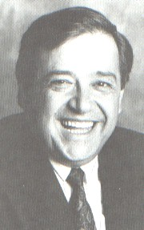
Director General
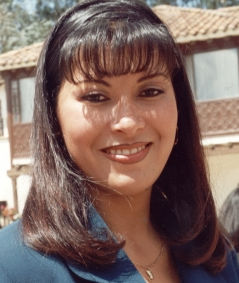
Rectora
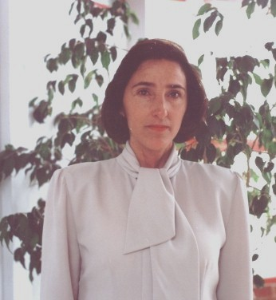
Coordinadora Convivencia Escolar
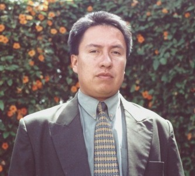
Auxiliar administrativo
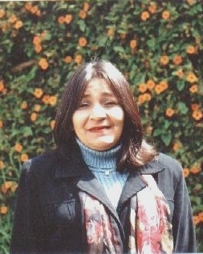
Contabilidad

Asesor en sistemas

Sicóloga
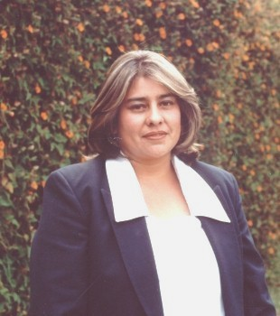
Enfermería
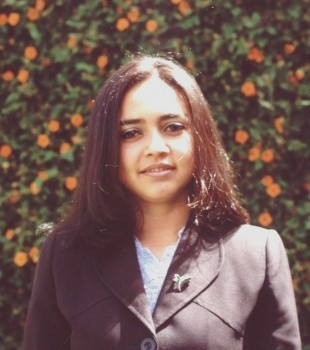
Recepción
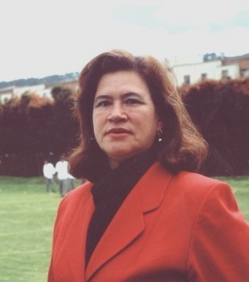
Secretaria académica
Servicios generales
Equipo de apoyo y terapia ocupacional recuperados del archivo original.
Paulina Prieto, Blanca Avila Duarte, Clara Carranza, Adiela Díaz Martínez, Luz Dary Fayad, Leonilda Ramírez, Azucena Rodríguez, Blanca Silva, Inés Villamizar, Blanca Díaz, Lucía Gálvez, Marina Muñoz, Rosalba Prieto, Sofía Quintero, Ligia Rico, Susana Rincón y Magda Romero.

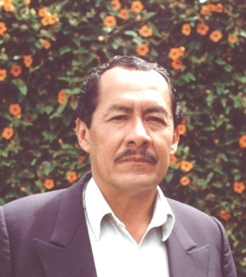
Mantenimiento
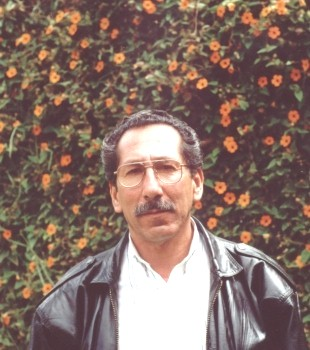
Bodega
De izquierda: Sandra Patricia Morales, Esmeralda Rodríguez, Ingrid Buitrago, Ruth Mireya Sánchez, Claudia Beltrán Hincapié, María del Pilar Ramírez y Nasly Carolina Cruz.
Coordinadora Olga Lucía Pinzón Avellaneda

Profesores
Pre-escolar, Primaria y Bachillerato recuperados de las páginas originales del anuario.
Pre-escolar
Esperanza Méndez, Alma Morales, Claudia Moreno, Liliana Monroy, Sandra Echeverry, Yeimmy Carranza y Patricia Cotrina.
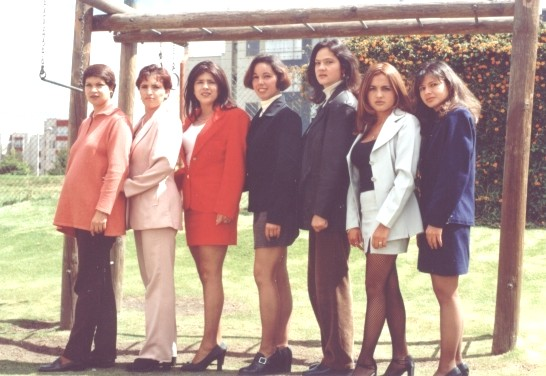
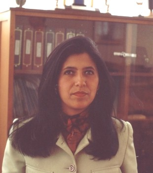
Primaria
Coordinadora Pre-escolar y Primaria
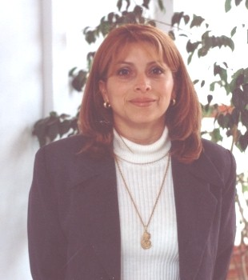
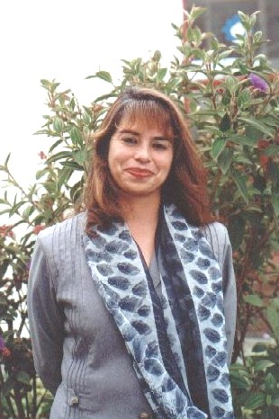
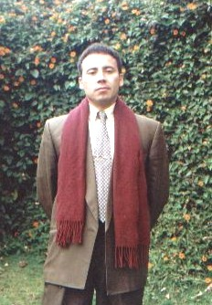
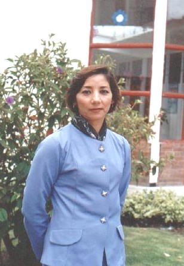
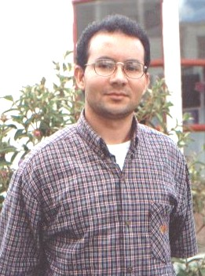
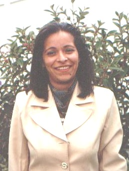

Bachillerato
Coordinadora Académico
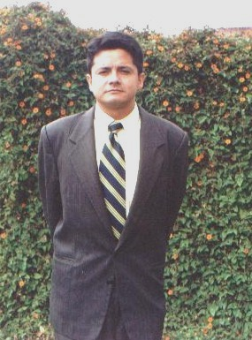
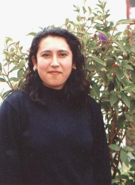
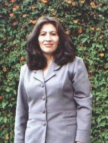
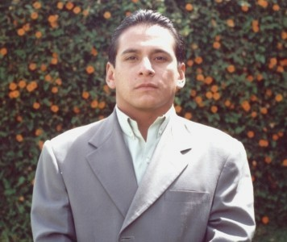
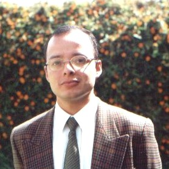
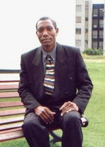
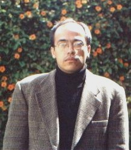
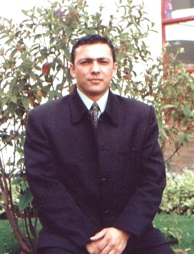
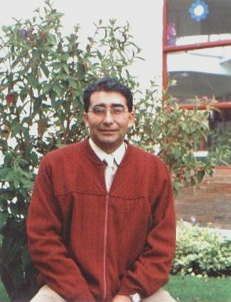
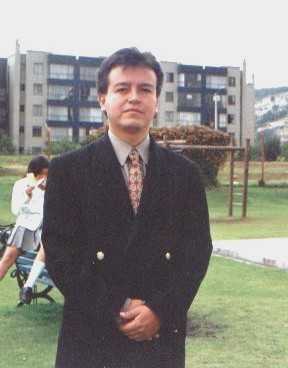
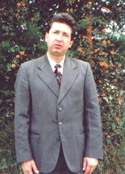
Promoción TJ2K
Una versión moderna del recorrido original por la promoción, con fotografías de grupo, momentos y retratos recuperados del archivo.
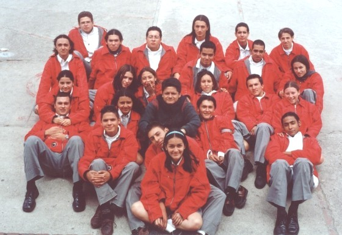
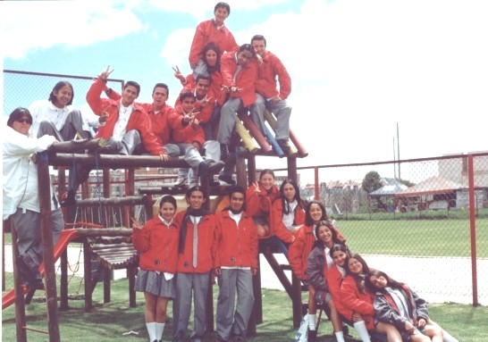
Collages del archivo original que reunían viajes, celebraciones y escenas de la promoción.
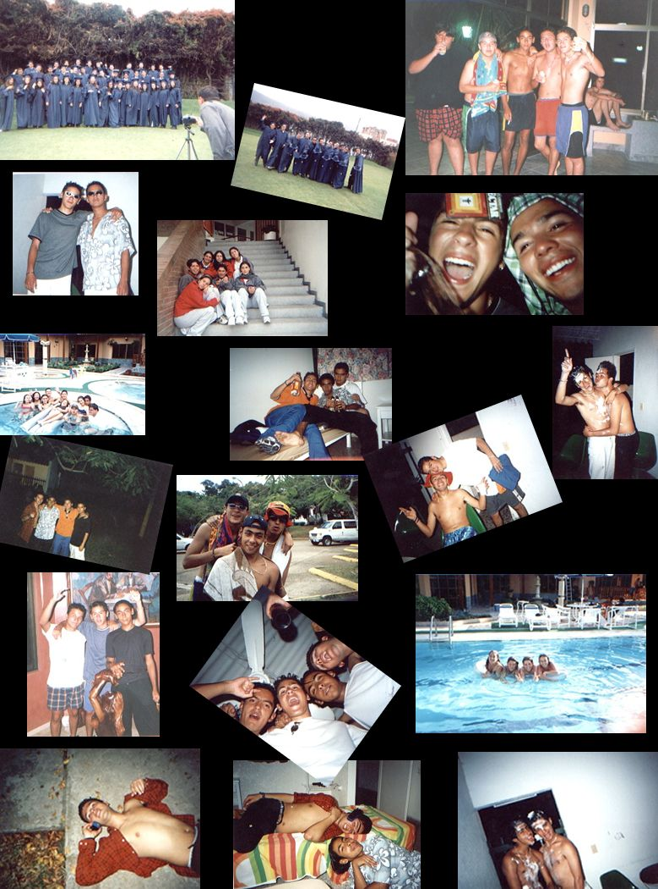

Selecciona un nombre para ver su imagen del archivo original.
Pre-escolar
Galería de cursos recuperada del archivo original: Párvulos, Pre-jardín, Jardín y Transición.

Párvulos
Ana María Ramírez Bernal, Gabriela Barrera Hernández, Lina María Olivar Cuellar, Carolina Velásquez Calderón, Diana Lucía Yunis Porras, Juan Camilo Villa Camacho, Leonardo Solórzano Escobar, Juan Sebastián Hernández Bermúdez, Sergio Andrés Lagos Moreno, Camilo Andrés Dueñas y Nicolás Augusto Gutiérrez Moreno. Faltó: Angie Julieta Arcila.
Miss Alma Moreno González
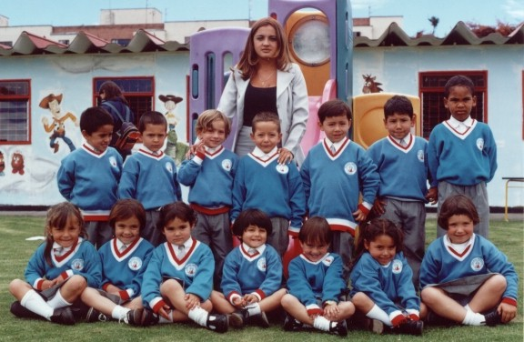
Pre-jardín
Erika Paola Rojas, Linda Marcela Benavides, Laura Catalina Londoño, Luisa Fernanda Ramírez, María Paula Duque, Ana Milena Pineda, Georgia Bolaños, Marco Pastrana, Enrique Arbeláez, David Antolínez, Juan Diego Molano, Jorge Luis García, Nicolás Caro y Christian Córdoba.
Miss Yeimmy Carranza A.

Jardín
Fila 1: Alejandra Caballero, Mayra Sanz, Diana Puertas, Erika Acosta, Manuela Castro, Silvia Bayona y Laura Baena. Fila 2: David Sánchez, Jorge Santiago Lizarazo, Nicolás Álvarez, Naren Gonzáles, Jhon Rozo y Sebastián Céspedes.
Miss Claudia Moreno

Jardín
Fila 1: Andrés Felipe Duque, Valeria Herrera y Daniela Flores. Fila 2: Juan Daniel Gonzáles, Tania Reyes, Nicolás Pinzón, Daniela Gonzáles y Malcom Mosquera. Fila 3: Gustavo Garzón, Manuela Lara y Camilo Hernández. Faltó: Adriana Rodríguez y Cindy Monroy.
Miss Liliana S. Monroy G.
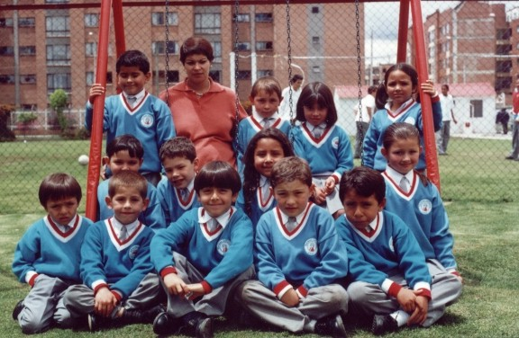
Transición
Fila 1: Santiago Luna, William Arcila, Carlos Martínez, Felipe Sanabria y Cristian Marín. Fila 2: Francisco Acosta, Salomón Arboleda, Alejandra Córdoba y Kimberly Gonzáles. Fila 3: Jorge Galvis, Julián Cáceres, Camila Piñeros y Natalia Tenjo.
Miss Esperanza Méndez López

Transición
Fila 1: Julián Andrés Díaz Prieto, Diego Esteban Jiménez, Néstor Julián Mora, Santiago Lozano, Yuwang Chía y Daniela Ramírez. Fila 2: Laura Guayara, María Alejandra Castellanos, Tatiana Velásquez, Sara Baena, Daniela Rivera, María Alejandra Lara, Dennis Carolina Peñalosa, Nicol Lozano, Laura Mariana Arango y Cinthya Macías.
Miss Sandra Echeverry Díaz
Primaria
Cursos de primero a quinto recuperados de las páginas originales del anuario.
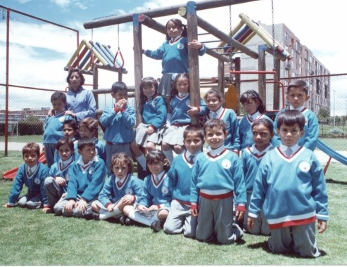
Primero
Cristian Rivera, Panayotis Arvanitis, Juan Pablo Ovalle, Valeria Correa, Yuliana Sanz, Miguel Felipe Díaz, Francisco Díaz, Lina Paola Maldonado, Jonathan Játiva, Andrés Felipe Lara, Cristian Bejarano, Matheo Riaño, Iván Darío Acevedo, Lina María Lucio, Alexandra Vega, María Juliana Guerrera, Daniela Granado, Nicolás Chaparro y Vanesa Morales.
Miss Ligia Forero Saenz
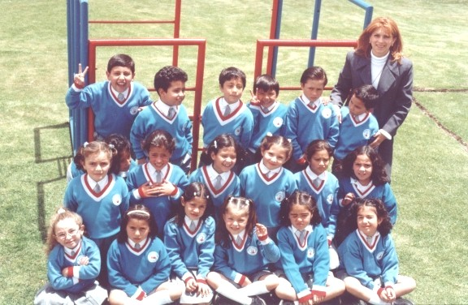
Primero
Katerine Dueñas, María Mónica Jiménez, Alejandra Almanza, Laura Ospina, Laura Jiménez, Daniela Castañeda, Ana María García, Mariana Jiménez, Daniela Cuestas, María Alejandra Castillo, Daniela Guerrero, Linda Serrano, Mariana Jiménez, Sharon Ríos, Miguel Yunés, David Romero, Nicolás Rodríguez, Juan Sebastián Benavides, Mateo Silva y Francisco Carranza.
Miss Diana Rodriguez
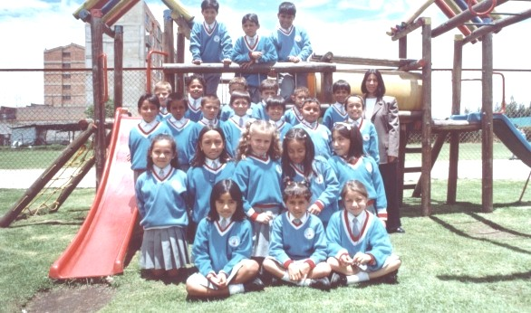
Segundo
Fila 1: Karen Paola Castro Osma, Ana María Lopera Vargas y Erika Carolina Saenz Burdón. Fila 2: Cindy Lorena Céspedes Otalora, Karen Viviana Villarraga Marchena, Lina Paola Gonzáles Cardona, Linda Stephania Patiño Saenz y Laura Alejandra Moreno. Fila 3: Daniel Isaac Ríos Rozo, Henry Sebastián Bastidas Rodríguez, Juan Diego Luna Rojas, Sergio Alonso Gonzáles Jiménez, Andrés Felipe Ramírez Acevedo, Juan Sebastián Silva Correa y Juan Sebastián Téllez Barreto. Fila 4: Sergio Daniel Parra Hernández, Luis Miguel Acosta Solano, Daniel Santos Castillo, Adul Buitrago López, Jhon Pierre Pereira Espitia y William Alejandro Sánchez Correa. Fila 5: Juan David López Correal, Sebastián Camilo Triana Castrillón y Agustín Santiago Salazar Millán. Ausente: Camilo Guiusseppi Giraldo Gonzáles.
Miss Martha Helena Rueda Neira

Segundo
Fila 1: Jennifer Vargas, Catalina Gómez, Daniela Gonzáles, Ana Milena Barreto, Romina Fernández y Jenny Saenz. Fila 2: Daniel Méndez, Carlos Yate, Camilo Rivas y Laura Cáceres. Fila 3: Julián Martínez, Nicolás Lara, Jairo Munevar, David Duque, Iván Jiménez, Juan Carlos París, Juan Sandino, Felipe Ruíz y Miguel Supelano.
Miss Sonia Pedraza
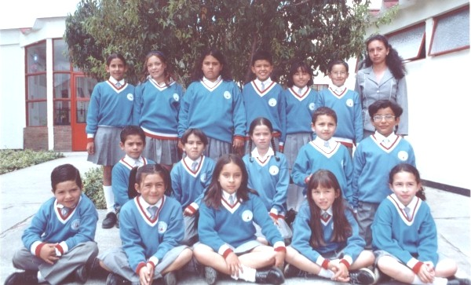
Tercero
Fila 1: Julián David Morales Cárdenas, Paula Alejandra Gonzáles Barbosa, Lili Vanessa Morales Martínez, Paula Castillo Monsalve y Andrea Malagón Trujillo. Fila 2: Jhoan Sebastián Hurtado Macías, Freddy Arturo Flechas Gamez, Marcela Carolina Medina Saenko, Andrés Leonardo Lizarazo Bermúdez y Jonathan Gutiérrez Rincón. Fila 3: Catherine Yate Cortés, Angela Pamela Carrasco Gonzáles, Stephanie Corral Castillo, Juan Sebastián Campos Méndez, Vivian Rocío Villamil Morales y Diego Alejandro Hernández Hernández.
Miss Gladys Arboleda Carrillo
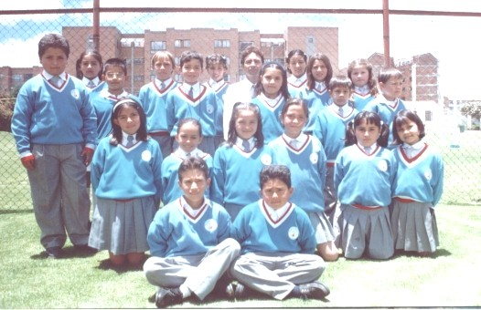
Tercero
Andrés Felipe Sánchez, Manuel Alejandro Piñeros, María Fernanda Hernández, Alejandra Forero, Jeimi Jiménez, Natalia Gutiérrez, Hasbleydy Vagón, Alejandra Cuestas, Javier Guzmán, Bryan Galvis, Juan David Ramírez, Viviana Romero Patiño, Luis Fernando Rozo, Daniel Felipe Villa, Laura Lisette Castro, Yean si Kal Etica, Victoria Mejía, Yessica Martínez, Vanesa Palacios y Angelica María Palacios.
Profesor Henry Bernal

Cuarto
Karen Barreno, Susan Mosquera, María Alejandra Hernández, María Ximena Castro, Ana Paola Arbeláez, Laura Rodríguez, Laura Maldonado, Cindy Roa, Mabel Arbeláez, Jonathan Jiménez, Víctor Castañeda, Carlos Moreno, Luis Felipe Rojas, Jesús Cepeda, Andrés Cardona, Juan Carlos Sanz, Camilo Díaz y César Morales.
Miss Sandra Borrero
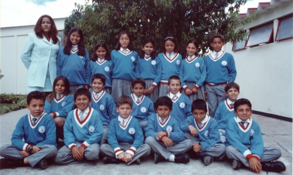
Cuarto
Fila 1: Germán Daniel Pimiento, José Leonardo Ruíz Jara, Juan Sebastián Rivera Restrepo, José Armando Gonzáles Rodríguez, Andrés Mauricio Peñalosa Toledo y Juan David Trujillo Flechas. Fila 2: María Camila Guerra Colorado, Michael Andrés Pereira Espitia y Cesar Augusto Rojas. Fila 3: Mejía Chía Hernández, Daniela Romero Cruz, Andrea Paola Molano Araque, Stephania Yate Cotés, Tatiana Vanesa Useche Cárdenas, Angelica María Pinzón Beltrán y David Alberto Salcedo Peñalosa. Ausente: Luisa Fernanda Rojas.
Miss Andrea Serna Arenas

Quinto
Arriba: Claudia Natalia Guerrero Latorre, Juan Pablo Valderrama Ramírez, Camilo Ernesto Vargas Camacho, José David Zabola Pacheco, Jhon Jairo Correa Ortiz, Neftaly Adolfo Chamucero Ríos, (atrás) David Acuña Hurtado, Jorge Alex Chacón Aldana, Jonathan Camilo Gómez Acosta, Julián David Peña León, Leonardo Andrés Dueñas Rojas, Giovanni Mosquera De La Valle y Paola Arango Muzzolini. Abajo: Laura Ximena Supelano Betancourt, María Camila Yepes Leaño, Valery Jaramillo Cáceres, Ingrid Tatiana Montenegro Amaya, Diana Carolina Teyes Barreto, Laura Catalina Gutiérrez Romero y Katherine Silva Castro.
Profesor Jaime Gonzáles
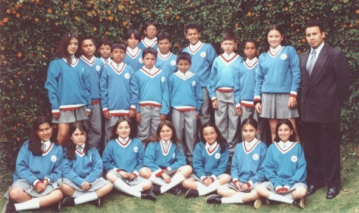
Quinto
De abajo hacia arriba, de izquierda a derecha: Laura Supelano, María Camila Yepes, Valery Jaramillo, Ingrid Tatiana Montenegro, Diana Téllez, Laura Gutiérrez, Katerine Silva, Claudia Natalia Guerrero, Juan Pablo Valderrama, José David Zabala, Jonathan Gómez, Leonardo Dueñas, Giovanni Mosquera, Paola Arango, Camilo Vargas, Jhon Jairo Correa, David Acuña y Jorge Alex Chacón.
Profesor Julián Peña
Bachillerato
Cursos de sexto a undécimo recuperados de las páginas originales del anuario.
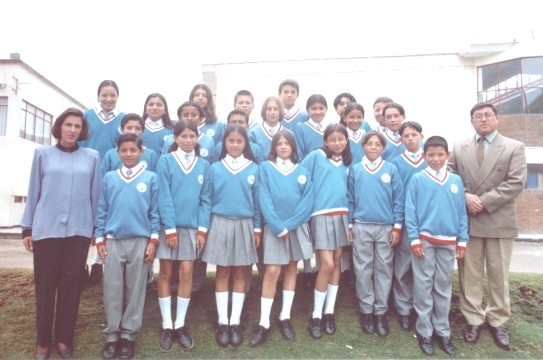
Sexto
Fila 1: Andrés F. Morales, Laura Puerto, Jennifer Correal, Kristel Pacheco, Nancy Castellanos, Carlos Vergara y John Castro. Fila 2: Hernando Serrano, Carlos Guerra, Lamar Niño, Nicolás Arango, Yessica Solórzano, Paula Ramírez y Sebastián Ortiz. Fila 3: Alejandra Angarita, Yasnaia Jaramillo, Laura Sarmiento, Abraham Molina, Francisco Yunis, Juan Sebastián Silva y Jorge Sánchez.
Miss Ana Rosa Melo
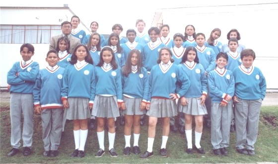
Sexto
Fila 1: Carlos Raúl Sánchez R., María Camila Prada G., Julio Cesar Hidalgo C., Juan David Lozano R., Alejandro Duarte D., Mabel Cristina Rojas P., Angel Focke M. y Claudia Angulo G. Fila 2: Carlos Gonzáles, Guerly Alexandra Londoño S., Carolina Serrano Z., Camila Castro R., Julián Camilo Virgez A., Juan Camilo Vásquez G., Jonathan Cortés, Andrés Eduardo Chicangana, Juan Camilo Díaz B., Alejandro Durán D., Camilo Andrés Rodríguez G., Edna Lorena Leguisamón C., Sara Giselle Ramírez P., Kathya Alexandra Villota G., Diana Carolina Carrasco G., Stephania Lsaralde V., Juan Sebastián Martínez e Iver Andrés Puentes M.
Miss Constanza Umaña
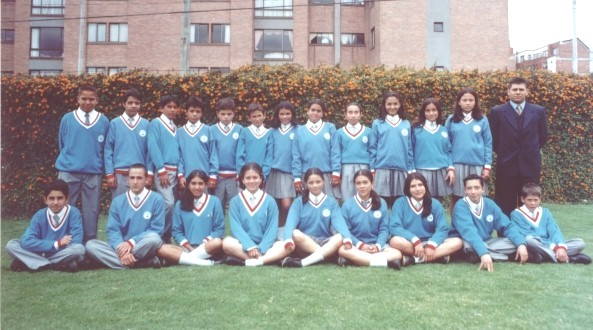
Séptimo
Sergio Martinez, Daniel Averra, Ingrid Londoño, Diana Zapato, Catalina Hernandez, Andrea Benites, Giselle Gonzales, Yessid Guarin, Jaime Ortíz, Juan Pablo Correa, David Garavito, Edwin Reina, Oscar Camacho, Camilo Bahena, Daniela Bastidas, Maria Alejandra Carvajal, Diana Garzón, Laura Sanchez, Paula Gallo y Laura Rojas.
Profesor Ricardo Palacios

Séptimo
Fila 1: Johanna Perez, Aura Urrea, Sara Tesone, Tatiana Jiménez, Rocio Prieto, Lina Guarnizo, Laura Ríos, Piedad Bautista y Laura Rojas. Fila 2: Karen Gómez, Nicolás París, Juan Trujillo, Juan Palacio, Guillermo Lozano, Osacr Chavarro, Carlos Lucio, Giovanni Vega, Juna Castro y Lida Díaz. Fila 3: Andrés Barrera, Miller Saavedra, Oscar Hernández, Oscar Hernández, Walter Buitrago, Danni Martinez y Pablo Ortiz.
Profesor Wilmer Vargas
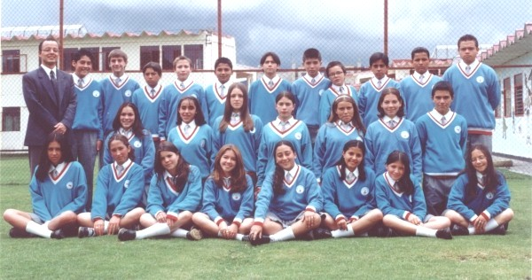
Octavo
Luis Eduardo López Lozano, Santiago Foche, Jorge Florez, Migule Rivera, Luis Eduardo Baquero, Andrés López, David Guzmán, Juan C. Sepúlveda, Luis H. Fajardo, Juan F. Parra, David C. Guzmán, Juliana Jiménez, Diana Ortega, María P. Rodríguez, Lauren Suarez, Silvia Santos, Laura Peraza, Daniel F. Armilora, Lina Ochoa, Nataly Calderón, Natalie Galvis, María P. Almorales, Daniela Benavides, Natalia Aldana, Diana Pacheco y Ana María Hernández.
Profesor Hector Gonzalez Tuesta
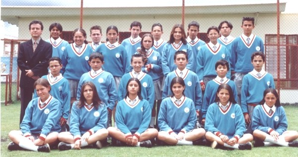
Octavo
Fila 1, de izquierda a derecha: Ingrid Nataly Caro Celis, Juliana Flores Giraldo, Felisa Álvarez Mesa, Sandra Sánchez, Natalí Chamucero Ríos y Karen Patiño Saenz. Fila 2, de izquierda a derecha: Diego Fernando Cancíno, Cristian Lozano Jara, Juan Carlos Millán Obando, Michael Jalbout Henao, Mario Roa Ortiz y Nicolás Rodríguez Vargas. Fila 3, de izquierda a derecha: Lucia Rodríguez Rodríguez, Juan Felipe Ortega Zúñiga, Adriana Rodríguez Leguizamon, Felipe Linero, Yais Natalie Carrasco Gonzáles, Camilo Cruz Rojas, Diana Jaramillo Unda, Santiago Marín, Juan David Carvajalino, Marwin Merchan Castañeda y Edmon Gutierrez Rincón.
Profesor Nelson Mejía Ramírez
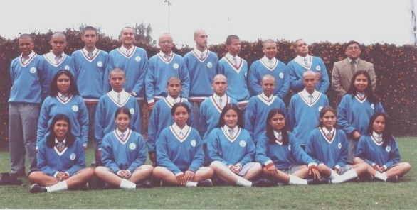
Noveno
De arriba hacia abajo y de izquierda a derecha: Nelson Luque Galindo, Luis Guillermo Vanegas, Nicolás Barra, Eduardo Peña Garzón, Paulo Calderón Santa, Juan David Prieto, Jaime Díaz, Rothman Guzmán, Jonathan Monclov, Karen Díaz, Fernando Cuervo, Juan David Lobatón, Jairo Afanador, Andres Ovalle, Cristian Durán, Katherine Zapata, Catalina Rojas, Jully Hernández, Viviana Domínguez, Nadia Castro, Lucia Giraldo, María Paula Rubio y Diana Méndez.
Miss Luz Dary Cadena
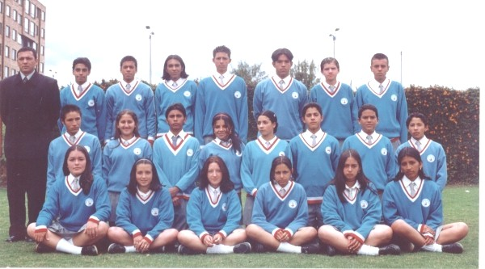
Noveno
De izquierda a derecha. Fila 1: Sandra Jiménez, Natalie Porras, Diana Niño, Gino Roncancio, Desivee Rojas y Rocio Cortés. Fila 2: Pedro Flores, Johanna Molina, Juan Manuel Arias, Viviana Guerrero, Mario Vargas, Luis Felipe Mesa, José Luis Carrillo y Hugo Prieto. Fila 3: Andrés Vega, Fabio Martínez, Hernán Hidalgo, Daniel Acuña, Julián Delagado, Sergio Guzmán y Juan Carlos Sarmiento.
Profesor Gonzalo Serna
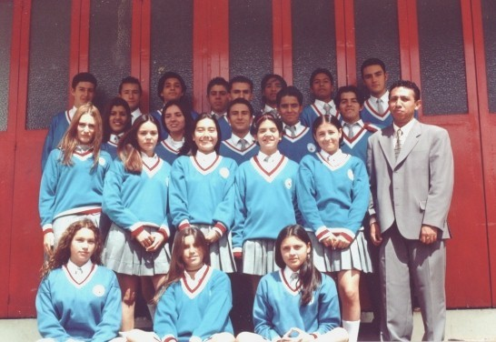
Décimo
Fila 1: Guliet Acosta, Tatiana Gonzáles y Zamira Saba. Fila 2: Helena Osorio, Natalia Reyes, Tatiana Acosta, Ana María García y Yadira Sánchez. Fila 3: Zuleima Fabregas, Cindy García, Andres Barrera, David Fajardo y Robinson Lynggaard. Fila 4: Federico Forero, Camilo Malaver, Alexander Carvajal, Felipe Palacio, Miguel Gutierrez, Ernesto Cortés, Dayro Ramírez y Carlos E. Palacios.
Profesor Fernando Andres Gonzáles
Décimo
Fila 1: Linda G. Correa, Catalina Owen y Mónica F. Pérez. Fila 2: Paula Mela, María P. Valaguera, Juliana Duque y Ginnie Roncancio. Fila 3: Carlos Rodríguez, Susana Pacheco, Tatiana Lozano, Alejandra Álvarez, Mario Palomino, Cristian Virgüez y Carlos Reyes. Fila 4: Dario Ermida, Sebastián Medina, Germán Páez, Camilo Carvajal, Gerardo Carvajalino, Javier Palacios, Leonardo Carrasco y Nelson Roncancio. Fila 5: Julio Barrera, Carlos Agudelo y Carlos Chavarro.
Profesor Juan C. Currea
Undécimo
De izquierda a derecha de abajo hacia arriba: Luisa Jiménez, Bernardo Álvarez, Gustavo Guzmán, Ricardo Vasquez, Sebastián Hoyos, Ana Barón, Andres Méndez, Mónica Serrano, Diana Segura, Diana Gonzáles, Andrea Cuellar, Cristian Cárdenas, Elizabeth Palacios, Mauricio Garzón, Felipe Camargo, Diego Berdugo, Oscar Henao, Maikel Grajales, David Barrera, Cesar Gomez, Andree Ronco, David Osorio y Andres Galindo.
Profesor Adolfo Triana
Undécimo
De izquierda a derecha de abajo hacia arriba: Camilo Sarmiento, Daniel Urrea, Carolina Mesa, Rafael Villamizar, Ingrid Martinez, Leonardo Orjuela, Gonzalo Sanchez, Nasbly Neira, Carolina Palacios, Ana Maria Villa, Nancy Diaz, Adriana Calderon, Adolfo Ballesteros, Camilo Vanegas, Oscar Osorio y Santiago Donoso. Ausentes: Oswaldo Fajardo y Norma Forero.
Profesor Manuel Gozalez